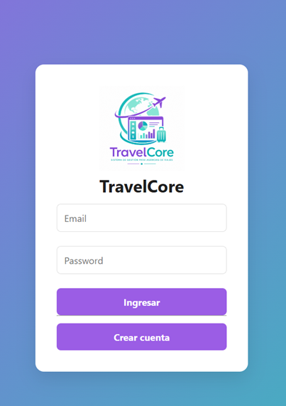
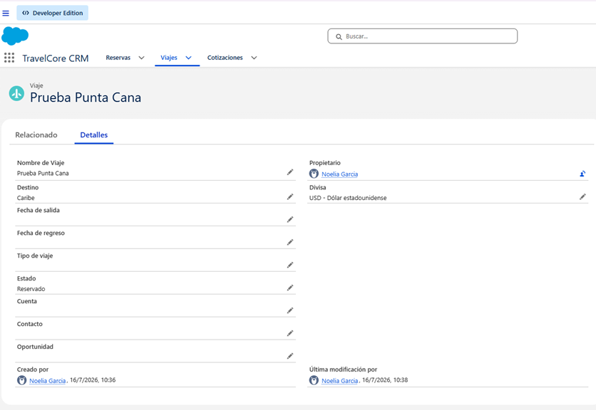
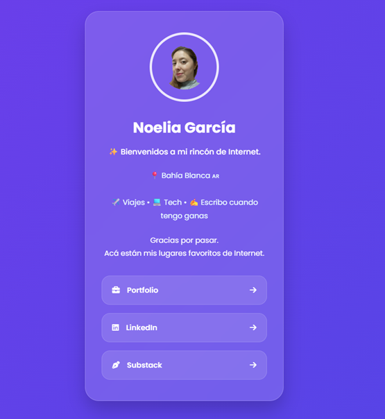
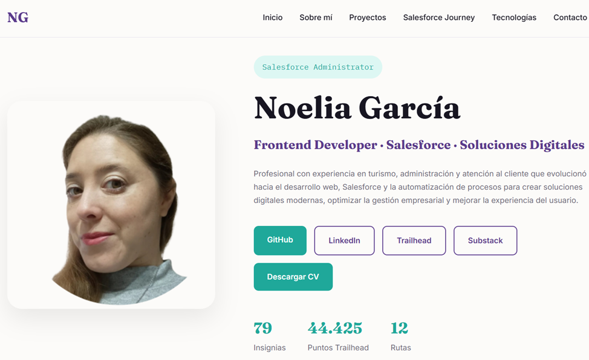

Experiencia real de negocio
Clientes, ventas, reservas, operaciones y atención personalizada.
Mi experiencia en turismo me ayudó a entender necesidades reales de clientes y negocios. Hoy combino ese conocimiento con Salesforce, desarrollo web, automatización y análisis de datos para transformar ideas y procesos en soluciones digitales.
Mi recorrido comenzó en turismo, donde desarrollé experiencia en administración, organización, ventas, operaciones y atención al cliente. Esa experiencia hoy es una parte importante de mi forma de pensar la tecnología.
Me interesa crear soluciones que no solo se vean bien, sino que resuelvan problemas concretos: ordenar información, automatizar tareas, mejorar procesos y facilitar la experiencia de las personas.
Actualmente continúo fortaleciendo mis conocimientos en Salesforce, desarrollo Frontend, análisis de datos y automatización mediante formación y proyectos prácticos.
Conocer mis enlacesClientes, ventas, reservas, operaciones y atención personalizada.
Objetos, Flow Builder, validaciones, procesos y gestión de datos.
Excel, Power BI y visualización para convertir datos en información útil.
HTML, CSS y JavaScript para crear experiencias responsive y fáciles de usar.
Una selección de proyectos que muestran distintas partes de mi recorrido: productos digitales, Salesforce, desarrollo web y creatividad.

Proyecto principalPlataforma en desarrollo para centralizar clientes, cotizaciones, reservas, vouchers, proveedores y procesos operativos de agencias de viajes.

Proyecto CRM orientado a una agencia de viajes, con objetos personalizados, relaciones, Flow Builder, automatizaciones y procesos comerciales.

Página para reunir enlaces personales en un solo lugar, desarrollada con HTML, CSS y JavaScript y pensada para una experiencia simple y responsive.

Sitio personal desarrollado desde cero con HTML5, CSS3 y JavaScript, con diseño responsive, navegación por secciones, animaciones y publicación en GitHub Pages.
Proyecto editorial infantil que combina escritura, narrativa, ilustración digital y herramientas de IA para crear una experiencia visual y literaria.
Mi formación combina Trailhead, práctica en una organización de aprendizaje y proyectos propios donde llevo los conceptos de Salesforce a situaciones concretas.
Badges, módulos y rutas para consolidar conocimientos de administración y servicios Salesforce.
Objetos estándar y personalizados, campos, relaciones, permisos, datos y procesos comerciales.
Diseño y prueba de Flows para crear tareas, reservas y procesos relacionados con oportunidades y cotizaciones.
Aplicación práctica de Salesforce a procesos de una agencia de viajes: leads, oportunidades, cotizaciones, viajes, reservas y tareas operativas.
Una combinación de desarrollo web, CRM, automatización y análisis de datos.
Estructura semántica y accesible.
Responsive design, layouts y UI.
Interactividad y comportamiento dinámico.
Administración y configuración de CRM.
Automatización de procesos.
Dashboards y visualización de datos.
Análisis y organización de información.
Control de versiones y publicación.
Base de datos y servicios para proyectos web.
Entorno principal de desarrollo.
Buenas prácticas para sitios web.
Diseño visual y contenido digital.
Podés encontrarme en estos espacios y conocer un poco más de mi recorrido, mis proyectos y lo que estoy aprendiendo.